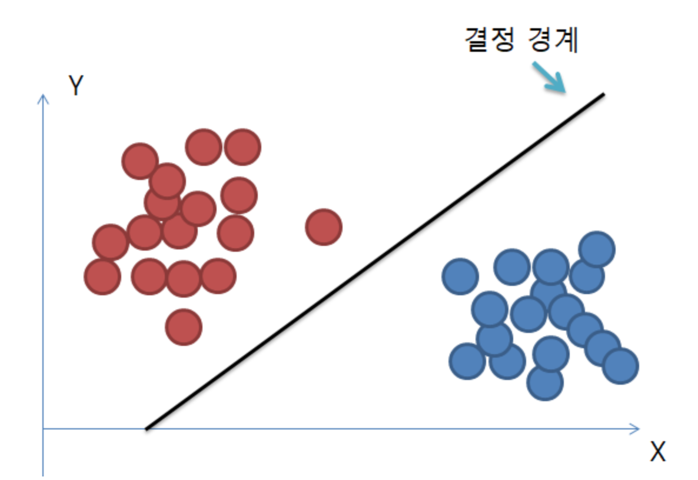
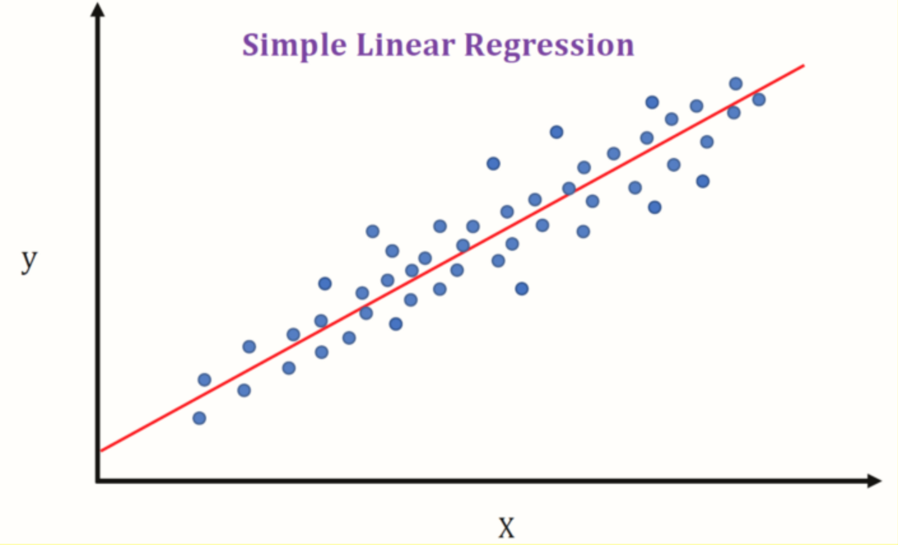
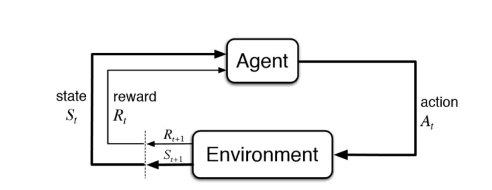

1장 컴퓨터는 데이터에서 배운다
여기서 다루는 것들
- 머신 러닝의 일반적 개념 이해하기
- 세 종류의 학습과 기본 용어 알아보기
- 성공적인 머신 러닝 시스템을 설계하는 수 요소 알아보기
- 데이터 분석과 머신 러닝을 위한 파이썬을 설치하고 설정하기
1.1 데이터를 지식으로 바꾸는 지능적인 시스템 구축
비정형 데이터가 풍부한 현대시대에 효율적으로 지식을 추출하여 예측 모델과 데이터 기반의 의사 결정 성능을 향상시키는 머신러닝은 점점 중요해 지고 있다. 최근에는 딥러닝 모델을 사용해서 여러 해결하기 어려웠던 문제들을 해결하고 잇다.
1.2 머신러닝의 세 가지 종류
1) 지도학습 (supervised learning)
- 레이블된 데이터
- 직접 피드백
- 출력 및 미래 예측
2) 비지도학습 (unsupervised learning)
- 레이블 및 타깃 없음
- 피드백 없음
- 데이터에서 숨겨진 구조 찾기
3) 강화학습 (reinforcement learning)
- 결정 과정
- 보상 시스템
- 연속된 행동에서 학습
1.2.1 지도학습으로 미래 예측
훈련데이터 → 머신러닝 알고리즘 → 예측 모델 → 예측
↑
새로운 데이터
분류: 클래스 레이블 예측
예) 스팸 메일 분류
- 훈련된 데이터에는 이메일이 스팸인지 아닌지 레이블링 되어있음
- 새로운 이메일을 스팸인지 아닌지 지도학습을 이용하여 분류 (classification)
위에서 언급한 스펨 메일 분류는 이진 분류(binary classification) 작업의 대표적인 예이다.

위의 그림은 2차원 데이터 셋의 샘플들을 두개의 클래스로 구분하는 규칙을 학습하여 경정 경계(decision boundary)라는 선이 나타나 이진 분류한 경우에 해당한다.
또한 두개 이상의 클래스 레이블을 가진 경우의 분류는 다중 분류(multiclass classification)이라고 한다. 대표적인 예로는 손으로 쓴 글자 인식이다.
회귀: 연속적인 출력 값 예측
회귀는 예측 변수(predictor variable) 또는 설명 변수(explanatory variable)와 연속적인 반응 변수(response variable) 또는 결과(outcome)가 주어졌을 때 출력 값을 예측하기 위해 두 변수 사이의 관계를 찾는 것이다.
머신러닝 분야에서는 에측 변수를 보통 “특성(feature)”이라고 부르고 반응 변수를 “타깃(target”이라고 부른다.
예) 학생들의 수학 SAT 점수 예측
- x(시험 공부에 투자한 시간)과 y(최종 점수) 사이의 관계가 있다고 가정
- 두 x, y를 훈련 데이터로 만들고 학습하여 예측

위의 그림과 같이 특성 x와 타깃 y가 주어지면 데이터 포인트와 직선 사이의 거리가 최소화 되는 직선을 긋고, 직선의 기울기와 절편을 사용하여 새로운 데이터의 출력 값을 에측한다.
1.2.2 강화 학습으로 반응형 문제 해결
머신러닝의 또 다른 종류인 강화학습은 환경(에이전트)과 상호 작용하여 시스템의 성능을 향상시키는 것이 목적이다.
강화학습의 피드백은 정답(ground truth) 레이블이나 값이 아니다.
보상 함수로 얼마나 행동이 좋은지를 측정한 값이다.
예) 체스 게임
- 에이전트는 체스판의 상태(환경)에 따라 기물의 이동을 결정
- 보상은 게임을 종료했을 때 승리하거나 패배하는 것으로 정의

강화 학습에는 여러 하위 분류가 있다.
일반적으로는 학습 에이전트가 환경과 상호 작용하여 보상을 최대화 하는 것이다. 예를들어 상대 체스 기물을 잡거나 퀸을 위협하는 것이다.
반면 어떤 위치는 게임에 질 가능성이 높은 상태와 연관된다. 예를들어 다음 턴에 상대로부터 기물을 잃게 되는 경우이다.
체스 게임에서 보상(승: +, 패: -)은 게임이 끝날 때까지 주어지지 않는다. 그리고 최종 보상은 상대의 플레이 방식에 따라 다르다. 예를들어 상대로부터 퀸을 잃었지만 게임에서 승리한 경우이다.
강화 학습은 행동을 수행하고 피드백을 통해 얻은 전체 보상을 최대화하는 일련의 행동을 학습하는 것이다.
1.2.3 비지도 학습으로 숨겨진 구조 발견
지도 학습에서는 훈련시에 정답을 알고 있고, 강화 학습에서는 에이전트의 특정 행동을 보상하는 방식이지만, 비지도 학습에서는 레이블되지 않거나 구조를 할 수 없는 데이터를 다룬다. 비지도 학습 기법을 사용하면